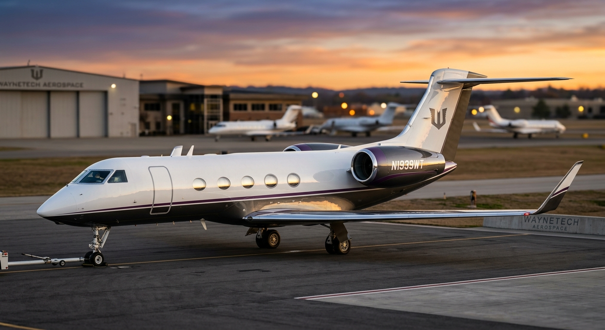
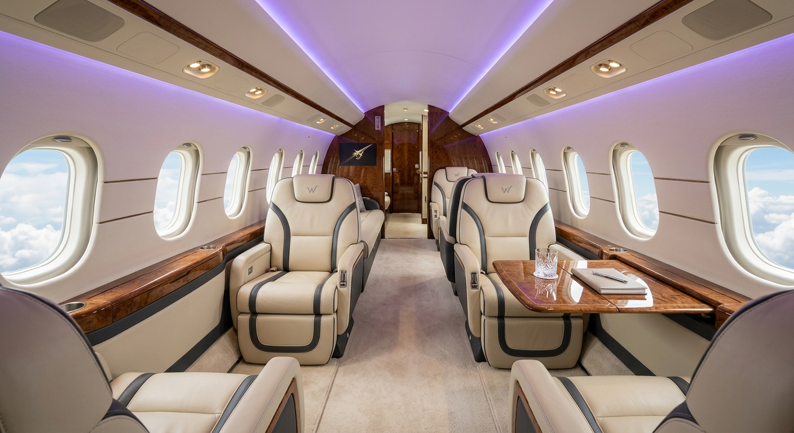

☰
Accueil
AeroSpace
Aeromat-A-01
Falcon-G-01
Hexa-C6-412
Mobility
Warden
Jet-WT
Viper
Biotech
Exo-Tissu
Stride
Secure-Link
Aegis-17
CivilTech
Laptop Study Book
Nest Assistant
Beacon Compact
Contact
WAYNETECH // DIVISION R&D : Véhicule Avancés & Mobilité.
Aéronef privé // Performance et confort de nouvelle génération.
Fiche Projet : Jet-WT
Classification :
Document interne sécurisé
Accès Restreint (Niveau 1)
Nom de code officiel (B2B) :
Avion d'affaires.
Usage réel sur le terrain :
Avion d'affaires et de voyage pour les haut dinitaires et VIP.


Caractéristiques Générales
Configuration
Jet d'affaires long-courrier, cabine exécutive
Longueur
~30,4 m
Envergure
~28,5 m
Hauteur
~7,9 m
Masse à vide
~22 500 kg
Masse maximale au décollage
~45 000 kg
Places
2 pilotes + jusqu'à 14 passagers
Propulsion
Moteur
2 × turboréacteurs WayneTech WT-Jet 700
Poussée unitaire visée
~7,3 t
Consommation croisière
Optimisée, technologie basse émission
Performances
Vitesse de croisière visée
Mach 0,90
Vitesse maximale visée
Mach 0,935
Plafond visé
~51 000 ft
Distance de décollage requise
~1 700 m
Distance d'atterrissage requise
~800 m
Autonomie & Emploi
Autonomie maximale
~13 000 km
Réserve de carburant
20 %
Emploi
Transport de personnalités, déplacements privés et professionnels
Missons intercontinentales
Prévues (sans escale sur la majorité des grandes liaisons)
Déploiement
Aéroports internationaux et privés
Compatible pistes courtes pour aviation d'affaires
Infrastructures standard d'aviation civile
Aucun besoin d'infrastructure militaire ou spécialisée
Signature
Livrée blanc et noir avec liseré violet WayneTech
Immatriculation civile standard
Aucune réduction de signature radar (aéronef strictement civil)
Finition polie haut de gamme
Avionique & Capteurs
Cockpit avionique nouvelle génération, redondance complète
Systèmes de navigation et communication satellite
Cabine pressurisée à altitude cabine réduite (confort passager)
Insonorisation renforcée
Fusion des données
Connectivité Wi-Fi haut débit à bord
Cabine
Configuration modulable (salon, bureau mobile, chambre privée en option)
Sièges en cuir pleine fleur, entièrement inclinables
Cuisine équipée et service de restauration à bord
Éclairage d'ambiance personnalisable
Système audio/vidéo haute fidélité intégré
Commandes De Vol
Commandes de vol numériques
Surfaces de contrôle indépendamment commandées
Gestion différentielle du roulis
Protection de l'enveloppe de vol
Surfaces mobiles à fonction aérodynamique réelle
Gestion Thermique
Gestion thermique du moteur
Surveillance thermique permanente
Mode thermique renforcé
Systèmes
Architecture électrique et hydraulique
Diagnostic prédictif de l'ensemble des systèmes
Basculement automatique en cas de panne
Maintenance programmée assistée par IA embarquée
Protection
Structure certifiée aviation civile internationale
Systèmes de sécurité passagers aux normes en vigueur
Kits de premiers secours et défibrillateur embarqués
Aucun blindage ni contre-mesure (aéronef civil non militarisé)
Technologies WayneTech
Fusion — Optimisation de trajectoire et gestion du trafic aérien assistée
Vector — Gestion fine de la consommation et de la stabilité en vol
Gestion thermique WayneTech des moteurs et de l'avionique
Wayne Emergency Mode — Protocole d'assistance au pilotage en situation dégradée
Communications
Communications satellite sécurisées
Liaison de données pour la maintenance prédictive
Connectivité passagers indépendante des systèmes de vol
Ecosystème WayneTech : Jet Assistance™
Diagnostic à distance
Pièces détachées
Maintenance spécialisée
Interventions
Équipage et service de conciergerie sur demande
Support logistique pour déplacements internationaux
Assistance technique
Logiciels
Contrôle Des Technologies Sensibles
Utilisation des fonctions normales par le propriétaire
Aucune technologie sensible embarquée (aéronef strictement civil)
Accès aux systèmes de maintenance réservé aux techniciens habilités